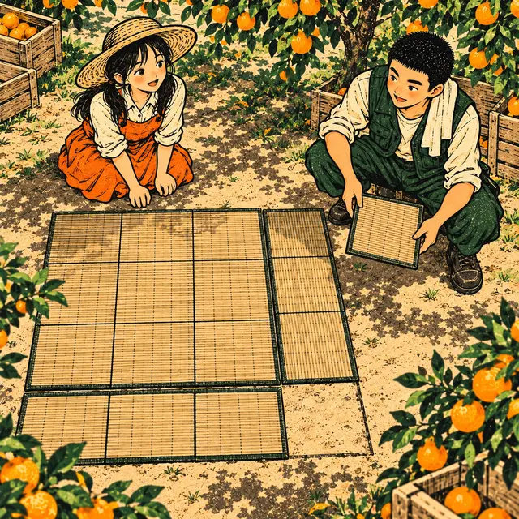
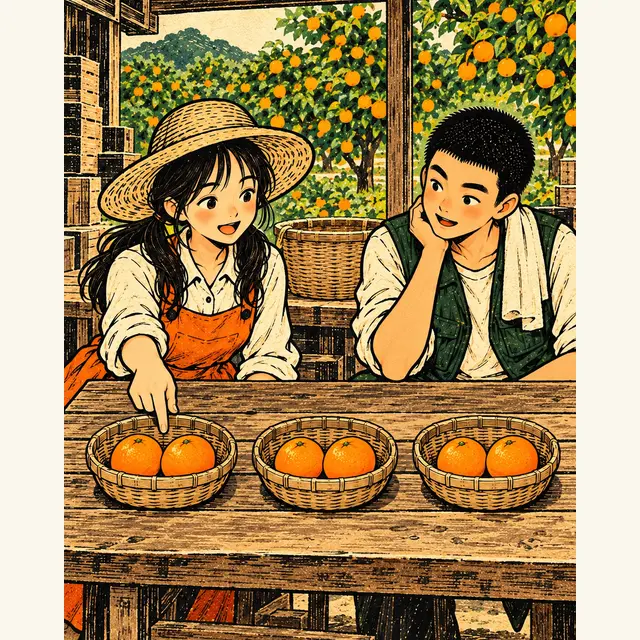
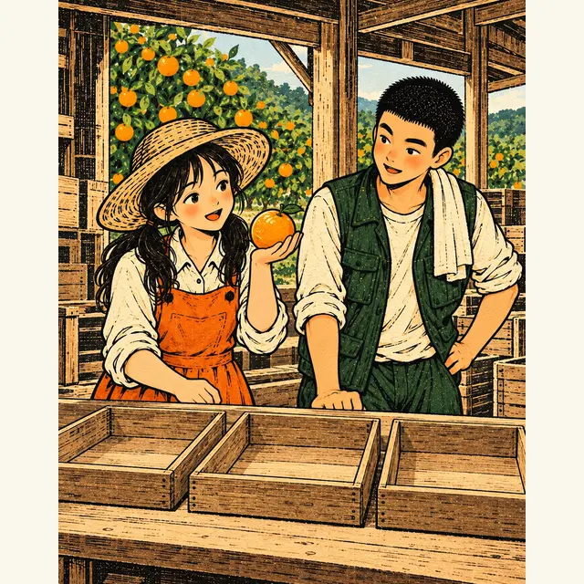
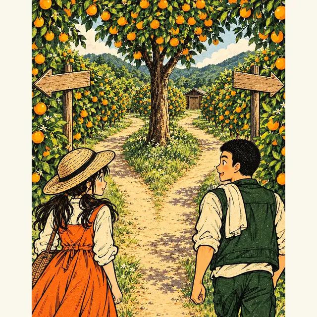
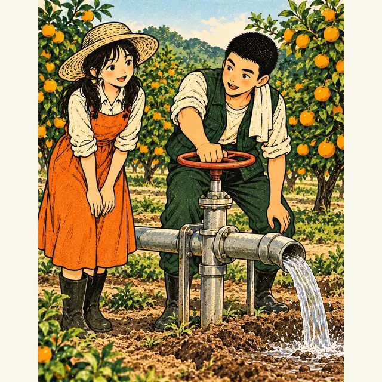

課前暖身漫畫：猜不到、也拆不開
小柚想把曬柑橘的正方形竹蓆，邊長增加 \(2\) 公尺，加寬後的面積是 \(30\) 平方公尺。設原本的邊長是 \(x\) 公尺，就得到 \((x + 2)^2 = 30\)，展開移項是 \(x^2 + 4x - 26 = 0\)。阿圃試了 \(3\)、\(4\) 都不對，十字交乘也找不到兩個整數——小柚說：別拆了，把它看成一個正方形就好。
重點 1：平方根概念——開平方要取「±」
重點整理與敘述
- 形如 \(x^2 = k\)（\(k \gt 0\)）：\(x\) 是 \(k\) 的平方根，所以 \(x = \pm\sqrt{k}\)。例如 \(x^2 = 36\)，\(x = \pm 6\)。
- 形如 \((x + a)^2 = k\)（\(k \gt 0\)）：把 \(x + a\) 整組看成一個數，它是 \(k\) 的平方根： \[\begin{aligned} & (x - 2)^2 = 5 \\ & x - 2 = \pm\sqrt{5} \\ & x = 2 \pm \sqrt{5} \end{aligned}\]
- 「±」一定要寫：正的平方根、負的平方根都能讓等號成立，只寫正的就漏掉一個解。
- \(2 \pm \sqrt{5}\) 代表 \(2 + \sqrt{5}\) 和 \(2 - \sqrt{5}\) 兩個數；需要近似值時可以用計算機，約為 \(4.24\) 和 \(-0.24\)。
- 根號裡的數要化成最簡根式：\(\sqrt{12} = 2\sqrt{3}\)。
視覺互動探索：開平方的兩個方向
方程式是 \((x + a)^2 = k\)。拉動 \(a\) 與 \(k\)，看兩個解怎麼在數線上對稱地落在 \(-a\) 的兩側；再切到「只取正號」，看看漏掉了誰。
形成性評量 (平方根概念)
Q1. 一元二次方程式 \((x - 4)^2 = 49\) 的解為何？
解析：答案為 B。\(x - 4\) 是 \(49\) 的平方根：
\[\begin{aligned} & x - 4 = \pm 7 \\ & x = 4 \pm 7 \end{aligned}\]
所以 \(x = 11\) 或 \(x = -3\)。
A 錯：只取了正的平方根，漏掉 \(x - 4 = -7\)。
C 錯：把 \(-4\) 移到右邊時沒有變號，算成 \(-4 \pm 7\)。
D 錯：忘了開平方，算成 \(x - 4 = \pm 49\)。
Q2. 一元二次方程式 \(x^2 = 50\) 的解為何？
解析：答案為 D。\(x\) 是 \(50\) 的平方根，\(x = \pm\sqrt{50} = \pm 5\sqrt{2}\)（因為 \(50 = 5^2 \times 2\)）。
A 錯：漏掉負的平方根 \(-5\sqrt{2}\)。
B 錯：把開平方當成除以 \(2\)；\(25^2 = 625\)，不是 \(50\)。
C 錯：\(\left(2\sqrt{5}\right)^2 = 20\)，不是 \(50\)。
重點 2：先移項，再開平方——\((ax + b)^2 = c\)
重點整理與敘述
- 先移項：把平方那一組單獨留在左邊，整理成 \((ax + b)^2 = c\) 的形式，才能開平方。
- 再開平方：\(ax + b = \pm\sqrt{c}\)。
- 最後解一次方程式：移項、再整個除以 \(x\) 的係數。例如： \[\begin{aligned} & (2x + 1)^2 - 6 = 3 \\ & (2x + 1)^2 = 9 \\ & 2x + 1 = \pm 3 \\ & 2x = -1 \pm 3 \end{aligned}\] 得 \(x = 1\) 或 \(x = -2\)。
- 除以係數時，根號那一項也要除：\(2x = 3 \pm \sqrt{7}\) 的解是 \(x = \dfrac{3 \pm \sqrt{7}}{2}\)，不是 \(\dfrac{3}{2} \pm \sqrt{7}\)。
視覺互動探索：(mx + n)² + t = R 的解題路線
拉動四個數，方程式是 \((mx + n)^2 + t = R\)。看每一步在做什麼——把 \(m\) 調大，注意最後一步右邊的兩項都要除；把 \(R - t\) 調成 \(0\) 或負數又會怎樣？
形成性評量 (先移項再開平方)
Q3. 一元二次方程式 \((3x + 1)^2 - 5 = 15\) 的解為何？
解析：答案為 A。先移項，再開平方：
\[\begin{aligned} & (3x + 1)^2 = 20 \\ & 3x + 1 = \pm 2\sqrt{5} \\ & 3x = -1 \pm 2\sqrt{5} \end{aligned}\]
右邊整個除以 \(3\)，得 \(x = \dfrac{-1 \pm 2\sqrt{5}}{3}\)。
B 錯：只有 \(-1\) 除以 \(3\)，\(2\sqrt{5}\) 沒有除。
C 錯：\(1\) 移到右邊時沒有變號。
D 錯：\(-5\) 移到右邊沒有變號，算成 \((3x + 1)^2 = 15 - 5 = 10\)。
Q4. 一元二次方程式 \((4x - 7)^2 + 3 = 27\) 的解為何？
解析：答案為 C。
\[\begin{aligned} & (4x - 7)^2 = 24 \\ & 4x - 7 = \pm 2\sqrt{6} \\ & 4x = 7 \pm 2\sqrt{6} \end{aligned}\]
右邊整個除以 \(4\)，得 \(x = \dfrac{7 \pm 2\sqrt{6}}{4}\)。
A 錯：\(-7\) 移到右邊沒有變號。
B 錯：只有 \(7\) 除以 \(4\)，\(2\sqrt{6}\) 沒有除。
D 錯：把 \(3\) 移到右邊時沒有變號，算成 \((4x - 7)^2 = 30\)。
重點 3：完全平方式——\(x^2 \pm px\) 補上 \(\left(\frac{p}{2}\right)^2\)
重點整理與敘述
- 完全平方式：一個一元二次式若能寫成 \((ax + b)^2\) 的形式，就稱為完全平方式。
- 配方：利用和的平方、差的平方公式，把二次式配成完全平方式。
- 要補的數：\(x\) 項係數取一半、再平方。
| 式子 | 一半 | 補上 | 配成 |
|---|---|---|---|
| \(x^2 + 10x\) | \(5\) | \(25\) | \((x + 5)^2\) |
| \(x^2 - 8x\) | \(4\) | \(16\) | \((x - 4)^2\) |
| \(x^2 - 3x\) | \(\frac{3}{2}\) | \(\frac{9}{4}\) | \(\left(x - \frac{3}{2}\right)^2\) |
- 補的數一定是正的：不論 \(x\) 項是加還是減，平方之後都是正數；正負號只決定括號裡是 \(+\) 還是 \(-\)。

視覺互動探索：補一角的面積拼圖
拉動 \(x\) 項係數 \(p\)。\(p\) 是正數時，\(x^2 + px\) 是一個正方形加兩條長條，缺一角；\(p\) 是負數時，從正方形減掉兩條長條，角落被減了兩次。要補的那一塊多大？
形成性評量 (完全平方式)
Q5. 若 \(x^2 - 14x + \square = (x - \bigstar)^2\)，則 \(\square\) 與 \(\bigstar\) 各是多少？
解析：答案為 C。\(x\) 項係數 \(14\) 的一半是 \(7\)，再平方是 \(49\)：
\[x^2 - 14x + 49 = (x - 7)^2\]
A 錯：沒有取一半，直接用 \(14\)；\((x - 14)^2\) 展開的 \(x\) 項是 \(-28x\)。
B 錯：題目已經寫好括號裡是「\(x -\)」，\(\bigstar = -7\) 會變成 \((x + 7)^2\)。
D 錯：補的數是平方，一定是正的。
Q6. 若 \(x^2 + kx + 64\) 是完全平方式，則 \(k\) 的值為何？
解析：答案為 A。\(64 = 8^2\)，所以這個完全平方式是 \((x + 8)^2\) 或 \((x - 8)^2\)：
\[\begin{aligned} & (x + 8)^2 = x^2 + 16x + 64 \\ & (x - 8)^2 = x^2 - 16x + 64 \end{aligned}\]
所以 \(k = 16\) 或 \(-16\)。
B 錯：漏掉差的平方那一種。
C 錯：\(8\) 是 \(k\) 的一半，\(k\) 本身是 \(2 \times 8\)。
D 錯：\(k\) 是一半的 \(2\) 倍，不是 \(4\) 倍。
重點 4：配方法——\(x^2\) 係數為 1 的方程式
重點整理與敘述
- 為什麼要配方：\(x^2 + 4x - 1 = 0\) 不能用整數因式分解，但只要整理成 \((x + 2)^2 = 5\)，就能用重點 1 的平方根概念解。
- 四個步驟：
- 常數項移到右邊；
- 兩邊同加「\(x\) 項係數一半的平方」；
- 左邊配成完全平方式；
- 開平方，解出 \(x\)。
- 所以 \(x = -2 \pm \sqrt{5}\)。
- 兩邊都要加：只在左邊補 \(2^2\)，等式就不成立了。
- \(x\) 項係數是奇數：一半是分數，右邊要通分。例如 \(x^2 - x = 1\)，兩邊同加 \(\left(\frac{1}{2}\right)^2\)，得 \(\left(x - \frac{1}{2}\right)^2 = \frac{5}{4}\)。
視覺互動探索：配方法逐步推導
方程式是 \(x^2 + bx + c = 0\)。拉動 \(b\)、\(c\)，再按「下一步」一行一行推導。試試 \(b\) 是奇數的情形，以及配完之後右邊變成 \(0\) 或負數的情形。
形成性評量 (配方法)
Q7. 用配方法解 \(x^2 - 10x + 7 = 0\)，解為何？
解析：答案為 B。
\[\begin{aligned} & x^2 - 10x = -7 \\ & x^2 - 10x + 5^2 = -7 + 5^2 \\ & (x - 5)^2 = 18 \\ & x - 5 = \pm 3\sqrt{2} \end{aligned}\]
所以 \(x = 5 \pm 3\sqrt{2}\)。
A 錯：\((x - 5)^2\) 開平方後，\(-5\) 移到右邊要變成 \(+5\)。
C 錯：\(7\) 移到右邊沒有變號，算成 \((x - 5)^2 = 32\)。
D 錯：補的是 \(10^2\)，沒有取一半；\((x - 10)^2\) 也不等於 \(x^2 - 10x + 100\)。
Q8. 阿圃用配方法解 \(x^2 - 9x + 4 = 0\)，過程如下：
第一步：\(x^2 - 9x = -4\)
第二步：\(x^2 - 9x + 9^2 = -4 + 9^2\)
第三步：\((x - 9)^2 = 77\)
第四步：\(x = 9 \pm \sqrt{77}\)
他從哪一步開始出錯？正確的解是什麼？
解析：答案為 A。第一步移項正確；第二步應該同加 \(\left(\frac{9}{2}\right)^2\)，不是 \(9^2\)：
\[\begin{aligned} & \left(x - \frac{9}{2}\right)^2 = -4 + \frac{81}{4} = \frac{65}{4} \\ & x - \frac{9}{2} = \pm\frac{\sqrt{65}}{2} \end{aligned}\]
所以 \(x = \dfrac{9 \pm \sqrt{65}}{2}\)。
B 錯：第一步把 \(4\) 移到右邊變成 \(-4\)，是對的。
C 錯：錯誤從第二步就開始了，而且 \(\sqrt{85}\) 也不對。
D 錯：\(\sqrt{\frac{65}{4}} = \frac{\sqrt{65}}{2}\)，根號那一項也要除以 \(2\)。
重點 5：常數項很大——配方法比十字交乘快
重點整理與敘述
- 十字交乘的困難：常數項的絕對值很大時，因數對很多，要一組一組試。
- 配方法不怕數字大：只要補上 \(x\) 項係數一半的平方，右邊往往剛好是一個完全平方數。
- 例：\(x^2 - 8x - 609 = 0\) \[\begin{aligned} & x^2 - 8x = 609 \\ & x^2 - 8x + 4^2 = 609 + 4^2 \\ & (x - 4)^2 = 625 \\ & x - 4 = \pm 25 \end{aligned}\] 得 \(x = 29\) 或 \(x = -21\)。
- 要熟記常見的平方數：\(20^2 = 400\)、\(25^2 = 625\)、\(30^2 = 900\)⋯⋯，開平方時才認得出來。
- 選方法：一元二次方程式都能用配方法解，但能直接因式分解的，用因式分解通常比較快。
視覺互動探索：配方 vs. 一組一組試
方程式是 \(x^2 + 2hx - N = 0\)，其中 \(N = s^2 - h^2\)。拉動 \(h\) 與 \(s\)：上面是配方法的五行，下面是十字交乘要試的因數對——要的那一組總是在最後面。
形成性評量 (常數項很大)
Q9. 一元二次方程式 \(x^2 - 14x - 1551 = 0\) 的解為何？
解析：答案為 B。
\[\begin{aligned} & x^2 - 14x = 1551 \\ & x^2 - 14x + 7^2 = 1551 + 7^2 \\ & (x - 7)^2 = 1600 \\ & x - 7 = \pm 40 \end{aligned}\]
所以 \(x = 47\) 或 \(x = -33\)。
A 錯：\(-7\) 移到右邊沒有變號，算成 \(-7 \pm 40\)。
C 錯：\(7 - 40 = -33\)，不是 \(33\)。
D 錯：兩邊要同加 \(7^2\)，右邊是 \(1551 + 49\)，不是減。
Q10. 已知方程式 \(x^2 - 3364 = 0\) 的兩根為 \(\pm 58\)。下列何者是方程式 \(x^2 + 10x - 3339 = 0\) 的解？
解析：答案為 D。配方後右邊剛好是 \(3364\)：
\[\begin{aligned} & x^2 + 10x + 5^2 = 3339 + 5^2 \\ & (x + 5)^2 = 3364 \\ & x + 5 = \pm 58 \end{aligned}\]
所以 \(x = 53\) 或 \(x = -63\)。
A、C 錯：把 \(+5\) 移到右邊時沒有變號，算成 \(5 \pm 58\)。
B 錯：\(58\) 是 \(x + 5\) 的值，不是 \(x\) 的值。
重點 6：\(x^2\) 係數不為 1——先同除以係數，再配方
重點整理與敘述
- 為什麼要先除：\(\left(x + \frac{p}{2}\right)^2\) 展開的開頭是 \(x^2\)，所以左邊的 \(x^2\) 係數必須是 \(1\) 才配得成。
- 利用等量公理：等號兩邊同除以 \(x^2\) 的係數，每一項都要除，包括常數項。
- 例：\(3x^2 - 6x - 1 = 0\) \[\begin{aligned} & x^2 - 2x - \frac{1}{3} = 0 \\ & x^2 - 2x = \frac{1}{3} \\ & x^2 - 2x + 1^2 = \frac{1}{3} + 1^2 \\ & (x - 1)^2 = \frac{4}{3} \end{aligned}\] 開平方得 \(x - 1 = \pm\dfrac{2\sqrt{3}}{3}\)，所以 \(x = \dfrac{3 \pm 2\sqrt{3}}{3}\)。
- 係數是負數也一樣：同除以負數時，每一項都變號。
- 開平方遇到分數：\(\sqrt{\frac{4}{3}} = \frac{2}{\sqrt{3}} = \frac{2\sqrt{3}}{3}\)，分母要有理化。

視覺互動探索：先除再配 vs. 直接配
方程式是 \(ax^2 + bx + c = 0\)。選 \(a\)、拉 \(b\) 與 \(c\)，看「先同除以 \(a\)」的完整推導；再切到錯誤示範，看看直接配方為什麼配不成。
形成性評量 (\(x^2\) 係數不為 1)
Q11. 用配方法解 \(2x^2 - 12x + 5 = 0\)，解為何？
解析：答案為 D。兩邊同除以 \(2\)，再配方：
\[\begin{aligned} & x^2 - 6x = -\frac{5}{2} \\ & x^2 - 6x + 3^2 = -\frac{5}{2} + 9 \\ & (x - 3)^2 = \frac{13}{2} \\ & x - 3 = \pm\frac{\sqrt{26}}{2} \end{aligned}\]
所以 \(x = 3 \pm \dfrac{\sqrt{26}}{2} = \dfrac{6 \pm \sqrt{26}}{2}\)。
A 錯：常數項 \(5\) 沒有除以 \(2\)，算成 \((x - 3)^2 = 4\)。
B 錯：\(\sqrt{\frac{13}{2}}\) 不等於 \(\frac{\sqrt{13}}{2}\)；分母要有理化成 \(\frac{\sqrt{26}}{2}\)。
C 錯：\(-3\) 移到右邊沒有變號。
Q12. 小柚用配方法解 \(5x^2 + 20x - 3 = 0\)，過程如下：
第一步：\(x^2 + 4x = 3\)
第二步：\(x^2 + 4x + 2^2 = 3 + 2^2\)
第三步：\((x + 2)^2 = 7\)
第四步：\(x = -2 \pm \sqrt{7}\)
她從哪一步開始出錯？
解析：答案為 C。兩邊同除以 \(5\) 時，常數項也要除，第一步應該是 \(x^2 + 4x = \dfrac{3}{5}\)。正確的過程：
\[\begin{aligned} & \left(x + 2\right)^2 = \frac{3}{5} + 4 = \frac{23}{5} \\ & x + 2 = \pm\frac{\sqrt{115}}{5} \end{aligned}\]
所以 \(x = \dfrac{-10 \pm \sqrt{115}}{5}\)。
A、B 錯：第二、三步的做法本身沒錯，錯誤是從第一步帶下來的。
D 錯：代 \(x = -2 + \sqrt{7}\) 回原式，左邊不等於 \(0\)。
重點 7：配方後右邊是 0 或負數——重根與無解
重點整理與敘述
配方後得到 \((x + h)^2 = k\)，解的情形由 \(k\) 的正負決定：
| 右邊 \(k\) | 解的情形 | 例子 |
|---|---|---|
| \(k \gt 0\) | 兩個相異的解 | \((x - 2)^2 = 5\) |
| \(k = 0\) | 兩個解相同（重根） | \((x + 1)^2 = 0\) |
| \(k \lt 0\) | 無解 | \((x - 3)^2 = -4\) |
- 重根：\((x + 1)^2 = 0\) 只有 \(x + 1 = 0\)，兩個解都是 \(-1\)。
- 無解：任何數的平方都不是負數，找不到 \(x\) 使 \((x - 3)^2 = -4\)。
- 所以解一元二次方程式有三種結果：兩個相異的解、重根、無解。
視覺互動探索：平方的值到得了 k 嗎？
方程式是 \((x + h)^2 = k\)。拉動 \(k\)：上面的數線是平方可能的值（只有 \(0\) 和正數），下面是對應的解。把 \(k\) 拉過 \(0\)，看解從兩個變一個、再變成沒有。
形成性評量 (重根與無解)
Q13. 甲方程式為 \((x - 7)^2 = 11\)，乙方程式為 \((x + 8)^2 = -3\)。關於兩個方程式解的情形，下列敘述何者正確？
解析：答案為 C。甲的右邊 \(11 \gt 0\)，\(x - 7 = \pm\sqrt{11}\)，有兩個相異的解 \(7 \pm \sqrt{11}\)。乙的右邊 \(-3 \lt 0\)，任何數的平方都不是負數，所以乙無解。
A、D 錯：平方不可能等於 \(-3\)，乙不會有解。
B 錯：右邊是 \(0\) 才是兩個相同的解，甲的右邊是 \(11\)。
Q14. 用配方法解 \(2x^2 - 28x + 98 = 0\)，結果為何？
解析：答案為 A。兩邊同除以 \(2\) 再配方：
\[\begin{aligned} & x^2 - 14x = -49 \\ & x^2 - 14x + 7^2 = -49 + 7^2 \\ & (x - 7)^2 = 0 \end{aligned}\]
只有 \(x - 7 = 0\)，兩個解都是 \(7\)。
B 錯：右邊是 \(0\)，\(\pm 0\) 只有一個值，不會出現 \(-7\)。
C 錯：右邊是 \(0\) 不是負數，有解。
D 錯：\(x - 7 = 0\) 移項得 \(x = 7\)，不是 \(-7\)。
重點 8：公式解——讀出 \(a\)、\(b\)、\(c\)，代入公式
重點整理與敘述
- 公式從配方法來：對 \(ax^2 + bx + c = 0\)（\(a \gt 0\)）做配方法，同除以 \(a\)、移項、兩邊同加 \(\left(\frac{b}{2a}\right)^2\)，得到 \[\left(x + \frac{b}{2a}\right)^2 = \frac{b^2 - 4ac}{4a^2}\] 當 \(b^2 - 4ac \gt 0\) 時開平方，就得到公式解。
- 三個步驟：① 化成 \(ax^2 + bx + c = 0\)，讀出 \(a\)、\(b\)、\(c\)（連同正負號）；② 算 \(b^2 - 4ac\)；③ 代入公式並化簡。
- 例：\(2x^2 + 3x - 4 = 0\)，\(a = 2\)、\(b = 3\)、\(c = -4\)： \[\begin{aligned} & b^2 - 4ac \\ &= 3^2 - 4 \times 2 \times (-4) \\ &= 41 \end{aligned}\] \[\begin{aligned} x &= \frac{-3 \pm \sqrt{41}}{2 \times 2} \\ &= \frac{-3 \pm \sqrt{41}}{4} \end{aligned}\]
- 常見錯誤：\(c\) 是負數時漏掉負號；分母只寫 \(2\)，忘了是 \(2a\)。
視覺互動探索：公式解代入台
拉動 \(a\)、\(b\)、\(c\)，看判別式與公式怎麼代入；再切到兩個錯誤示範，看看代錯一個數，答案代回原式會差多少。
形成性評量 (公式解)
Q15. 利用公式解，一元二次方程式 \(2x^2 - 7x - 3 = 0\) 的解為何？
解析：答案為 D。\(a = 2\)、\(b = -7\)、\(c = -3\)：
\[\begin{aligned} & b^2 - 4ac \\ &= (-7)^2 - 4 \times 2 \times (-3) \\ &= 73 \end{aligned}\]
\[\begin{aligned} x &= \frac{-(-7) \pm \sqrt{73}}{2 \times 2} \\ &= \frac{7 \pm \sqrt{73}}{4} \end{aligned}\]
A 錯：分母是 \(2a = 4\)，不是 \(2\)。
B 錯：\(-b = -(-7) = 7\)，不是 \(-7\)。
C 錯：漏了 \(c\) 的負號，判別式算成 \(49 - 24 = 25\)。
Q16. 阿圃用公式解解 \(x^2 + 7x - 2 = 0\)，寫成 \[\begin{aligned} x &= \frac{-7 \pm \sqrt{49 - 8}}{2} \\ &= \frac{-7 \pm \sqrt{41}}{2} \end{aligned}\] 下列敘述何者正確？
解析：答案為 B。\(a = 1\)、\(b = 7\)、\(c = -2\)：
\[\begin{aligned} & b^2 - 4ac \\ &= 49 - 4 \times 1 \times (-2) \\ &= 57 \end{aligned}\]
所以 \(x = \dfrac{-7 \pm \sqrt{57}}{2}\)。
阿圃把 \(-4 \times 1 \times (-2)\) 算成 \(-8\)，其實是 \(+8\)。
A 錯：判別式算錯了。
C 錯：\(b = 7\)，代入公式的 \(-b\) 才是 \(-7\)，阿圃這部分沒錯。
D 錯：\(a = 1\)，分母 \(2a = 2\)，阿圃這部分也沒錯。
重點 9：判別式 \(b^2 - 4ac\)——不必解，先看正負
重點整理與敘述
- 判別式：\(b^2 - 4ac\) 的正負就能判斷 \(ax^2 + bx + c = 0\) 的解的情形，所以稱它為方程式的判別式。
- 一定要先化成一般式，才能讀出 \(a\)、\(b\)、\(c\)。
- 重根的值：判別式為 \(0\) 時，公式的 \(\pm\sqrt{0}\) 消失，重根就是 \(x = -\dfrac{b}{2a}\)。
| 判別式 | 解的情形 |
|---|---|
| \(b^2 - 4ac \gt 0\) | 兩個相異的根 |
| \(b^2 - 4ac = 0\) | 兩根相等（重根） |
| \(b^2 - 4ac \lt 0\) | 無解 |
| 方程式 | 判別式 | 情形 |
|---|---|---|
| \(x^2 - 6x + 9 = 0\) | \(0\) | 重根 |
| \(x^2 + 2x + 5 = 0\) | \(-16\) | 無解 |
| \(3x^2 + 5x - 1 = 0\) | \(37\) | 相異兩根 |

視覺互動探索：判別式儀表
拉動 \(a\)、\(b\)、\(c\)，指針指出判別式的值落在正、零還是負；最下面把方程式真的解出來對照，判斷每次都對嗎？
形成性評量 (判別式)
Q17. 下列哪一個方程式有重根？
解析：答案為 C。逐一算判別式：
A：\(900 + 900 = 1800 \gt 0\)，兩個相異的根。
B：\(225 - 900 = -675 \lt 0\)，無解。
C：\(900 - 900 = 0\)，重根（就是 \((3x - 5)^2 = 0\)）。
D：\(900 - 864 = 36 \gt 0\)，兩個相異的根。
Q18. 方程式 \(5x^2 + 9x + 6 = 0\) 的解的情形為何？
解析：答案為 D。\(a = 5\)、\(b = 9\)、\(c = 6\)：
\[\begin{aligned} & b^2 - 4ac \\ &= 81 - 120 \\ &= -39 \lt 0 \end{aligned}\]
所以方程式無解。
A 錯：把 \(81 - 120\) 算成 \(81 + 120\)。
B 錯：判別式等於 \(0\) 才是重根。
C 錯：判別式的用途就是不必解，直接判斷。
重點 10：\(x^2\) 係數為負數——也能直接用公式解
重點整理與敘述
- 方法一：等號兩邊同乘以 \(-1\)，把 \(x^2\) 係數變成正數，再用公式解。
- 方法二：直接把負的 \(a\) 代入公式，最後分子、分母同乘以 \(-1\) 化簡。
- 例：\(-2x^2 + 3x + 1 = 0\)，\(a = -2\)、\(b = 3\)、\(c = 1\)： \[\begin{aligned} & b^2 - 4ac \\ &= 9 - 4 \times (-2) \times 1 \\ &= 17 \end{aligned}\] \[\begin{aligned} x &= \frac{-3 \pm \sqrt{17}}{-4} \\ &= \frac{3 \pm \sqrt{17}}{4} \end{aligned}\]
- 兩種方法答案相同：\(\pm\) 本來就包含兩個正負號，分子分母同乘以 \(-1\) 時，\(\pm\) 不變。
- 注意分母：\(2a\) 是負數，不能寫成正的就不管。

視覺互動探索：兩種做法對照
拉動 \(a\)（負數）、\(b\)、\(c\)：左邊先同乘以 \(-1\)，右邊直接代入。兩條路的判別式一樣嗎？化簡後的答案一樣嗎？
形成性評量 (\(x^2\) 係數為負數)
Q19. 一元二次方程式 \(-3x^2 + 8x + 2 = 0\) 的解為何？
解析：答案為 B。\(a = -3\)、\(b = 8\)、\(c = 2\)：
\[\begin{aligned} & b^2 - 4ac = 64 + 24 = 88 \\ & x = \frac{-8 \pm 2\sqrt{22}}{-6} = \frac{4 \pm \sqrt{22}}{3} \end{aligned}\]
（分子、分母同除以 \(-2\)；\(\pm\) 不受影響。）
A 錯：分母是 \(-6\)，同除以 \(-2\) 時分子也要變號。
C 錯：\(-4 \times (-3) \times 2 = +24\)，判別式算成 \(64 - 24\) 就錯了。
D 錯：\(2\sqrt{22}\) 也要除以 \(2\)，只除了 \(8\)。
Q20. 小柚解 \(-4x^2 + x + 7 = 0\)，算出判別式為 \(113\)，再寫成 \(x = \dfrac{-1 \pm \sqrt{113}}{8}\)。下列敘述何者正確？
解析：答案為 A。\(a = -4\)、\(b = 1\)、\(c = 7\)，判別式 \(1 - 4 \times (-4) \times 7 = 113\) 是對的；但分母是 \(2a = -8\)：
\[x = \frac{-1 \pm \sqrt{113}}{-8} = \frac{1 \pm \sqrt{113}}{8}\]
B 錯：分母的負號弄丟了，兩個答案都差一個負號。
C 錯：\(-4ac = -4 \times (-4) \times 7 = +112\)。
D 錯：\(a\) 是負數也可以直接代入公式。
重點 11：已知解的情形，反求係數
重點整理與敘述
- 把文字翻成判別式：
- 有兩個相異的根 → \(b^2 - 4ac \gt 0\)
- 有重根 → \(b^2 - 4ac = 0\)
- 無解 → \(b^2 - 4ac \lt 0\)
- 再解出未知的係數：「有重根」得到一個等式；「相異兩根」「無解」得到不等式，答案是一個範圍。
- 例：\(x^2 + 6x + k = 0\)
- 有重根：\(36 - 4k = 0\)，\(k = 9\)，此時 \((x + 3)^2 = 0\)，重根為 \(-3\)。
- 有兩個相異的根：\(36 - 4k \gt 0\)，\(k \lt 9\)。
- 無解：\(36 - 4k \lt 0\)，\(k \gt 9\)。
- 題目問「最大整數」「最小整數」時，先解出範圍，再挑範圍裡的整數；注意等號有沒有包含。

視覺互動探索：m 的範圍在哪裡？
方程式是 \(x^2 + bx + m = 0\)。選一種解的情形、拉動 \(b\)，數線上標出 \(m\) 要滿足的範圍；再拉 \(m\) 實際驗證：落在範圍裡的 \(m\) 真的是那種情形嗎？
形成性評量 (反求係數)
Q21. 已知 \(x\) 的一元二次方程式 \(x^2 - 12x + (2m + 4) = 0\) 有重根，則 \(m\) 的值與方程式的解為何？
解析：答案為 A。有重根，所以判別式 \(= 0\)：
\[\begin{aligned} & (-12)^2 - 4 \times 1 \times (2m + 4) \\ &\qquad = 0 \\ & 144 - 8m - 16 = 0 \end{aligned}\]
得 \(m = 16\)。代回得 \(x^2 - 12x + 36 = 0\)，即 \((x - 6)^2 = 0\)，重根為 \(6\)。
B 錯：\((x - 6)^2 = 0\) 的解是 \(6\)，不是 \(-6\)。
C 錯：漏了 \(4ac\) 的 \(4\)，算成 \(144 = 2m + 4\)。
D 錯：\(4 \times (2m + 4)\) 要分配給 \(2m\)，是 \(8m\) 不是 \(4m\)。
Q22. 已知 \(x\) 的一元二次方程式 \(mx^2 - 6x + 1 = 0\) 無解，則 \(m\) 的最小整數值為何？
解析：答案為 B。無解，所以判別式 \(\lt 0\)：
\[\begin{aligned} & (-6)^2 - 4 \times m \times 1 \lt 0 \\ & 36 - 4m \lt 0 \end{aligned}\]
得 \(m \gt 9\)，最小的整數是 \(10\)。
A 錯：\(m = 9\) 時判別式 \(= 0\)，是重根，不是無解。
C 錯：\(m \lt 9\) 是「兩個相異的根」的範圍，不等號方向弄反了。
D 錯：漏了 \(4ac\) 的 \(4\)，算成 \(36 - m \lt 0\)。
小節總結與核心回顧
解一元二次方程式速查表
- 平方根概念：\((x + a)^2 = k\)，\(k \gt 0\) 時 \(x = -a \pm \sqrt{k}\)；別漏「±」。
- 先移項：平方那一組單獨留在左邊；最後整個除以係數。
- 配方：補上「\(x\) 項係數一半的平方」，兩邊都要加。
- \(x^2\) 係數不是 \(1\)：先同除以係數，每一項都要除。
- 配完看右邊：正數兩解、\(0\) 重根、負數無解。
- 公式解：讀出 \(a\)、\(b\)、\(c\)（連同正負號），分母是 \(2a\)。
- 判別式：\(b^2 - 4ac\) 的正、零、負決定兩根、重根、無解。
- 選方法：能因式分解就分解；常數項很大用配方；其餘用公式解。
回到果園：竹蓆原本多大？
不必再用猜的
小柚的竹蓆是 \((x + 2)^2 = 30\)：開平方得 \(x + 2 = \pm\sqrt{30}\)，所以 \(x = -2 \pm \sqrt{30}\)。邊長不能是負數，原本的邊長是 \(-2 + \sqrt{30}\)，約 \(3.48\) 公尺——難怪阿圃試 \(3\)、\(4\) 都不對。
三種方法其實是同一件事
阿圃把它展開成 \(x^2 + 4x - 26 = 0\) 也沒關係：配方是補上 \(2^2\) 回到 \((x + 2)^2 = 30\)；用公式解，判別式 \(16 + 104 = 120\)，
下一節預告
剛剛「邊長不能是負數」就是在檢查解合不合情境。下一節的應用問題，要先列出一元二次方程式，解完還要判斷哪個解才合理。